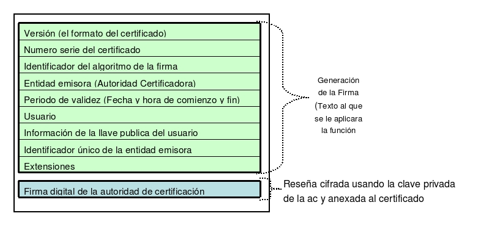

16.5.- Certificado Digital.
Un Certificado Digital es un documento digital firmado digitalmente por un tercero confiable (una Autoridad de Certificación) el cual garantiza la vinculación entre la identidad de un sujeto o entidad y su clave pública. Si el Certificado es auténtico y confiamos en la Autoridad Certificadora (AC). Entonces, podemos confiar en que el usuario identificado en el Certificado Digital posee la clave pública que se señala en dicho certificado. Así pues, si un sujeto firma un documento y anexa su certificado digital, cualquiera que conozca la clave pública de la AC podrá autenticar el documento.

figura S5.5-1, Esquema, Certificado digital